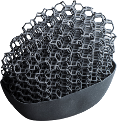

Onze 4 technologieën, één atelier
Elke technologie is een volledig ecosysteem: een proces, zijn machines, zijn materialen. 11 machines en 29 materialen, zo gerangschikt dat u de juiste combinatie in één oogopslag vindt.
Stevig nylon onderdeel, fijne korrel, vrije vormen
2 machines · 10 materialen↓Fused filament fabricationFDMVan meerkleurig PLA tot hoogwaardig PEEK
5 machines · 12 materialen↓Stereolithografie (hars)SLAGlad, uiterst gedetailleerd onderdeel
1 machine↓CNC-verspaningCNCMassief onderdeel, nauwkeurige maten, mooie afwerking
1 machine · 7 materialen↓Welke technologie voor welke behoefte?
Een functioneel onderdeel in nylon, complexe vormen of een kleine serie
SLS →U hebt nodig…Een snel prototype, een groot onderdeel, meerkleurig of een materiaal voor hoge temperaturen
FDM →U hebt nodig…Zeer fijne details en een glad oppervlak: maquette, figuur, zichtonderdeel
SLA →U hebt nodig…Een metalen onderdeel of zeer nauwkeurige passingen
CNC →SLS
Een laser smelt nylonpoeder, laag na laag. Het omringende poeder ondersteunt het onderdeel: geen supports.
- Functionele en mechanische onderdelen
- Complexe vormen, interne kanalen, geïntegreerde scharnieren
- Kleine series: tientallen onderdelen per cyclus
- Onderdelen bestand tegen schokken en slijtage



FDM
Een nozzle brengt gesmolten kunststofdraad lijn per lijn aan, als een computergestuurde 3D-pen.
- Snelle, voordelige prototypes
- Zeer ruime materiaalkeuze, van PLA tot PEEK en ULTEM
- Grote onderdelen (Modix Big Meter)
- Meerkleurige en multimateriaalonderdelen

Bambu Lab H2C
Multimateriaalprinten
Fiche bekijken →
Bambu Lab X1C
3D-printen voor series
Fiche bekijken →
Prusa Core One
Snelle industriële prototyping
Fiche bekijken →
Modix Big Meter
3D-printen op groot formaat
Fiche bekijken →
INTAMSYS Funmat HT
Industriële materialen
Fiche bekijken →


SLA
Een vloeibare hars hardt uit onder uv-licht, laag per laag, voor maximale detaillering.
- Zeer fijne details
- Gladde oppervlakken rechtstreeks uit de machine
- Maquettes, figuren, designprototypes
- Masters voor gietvormen

CNC
Een frees verwijdert materiaal uit een massief blok: het onderdeel wordt uit het volle gefreesd, in metaal of technische kunststof.
- Metalen onderdelen
- Nauwkeurige passingen en boringen
- Mechanische onderdelen onderhevig aan slijtage of hitte
- Platen, steunen, kleine series


Ook: 3D-scan & lasergravure


Een onderdeel te maken?
Stuur uw 3D-bestand of beschrijf uw behoefte: directe offerte met bestand, offerte op maat binnen 24 u.